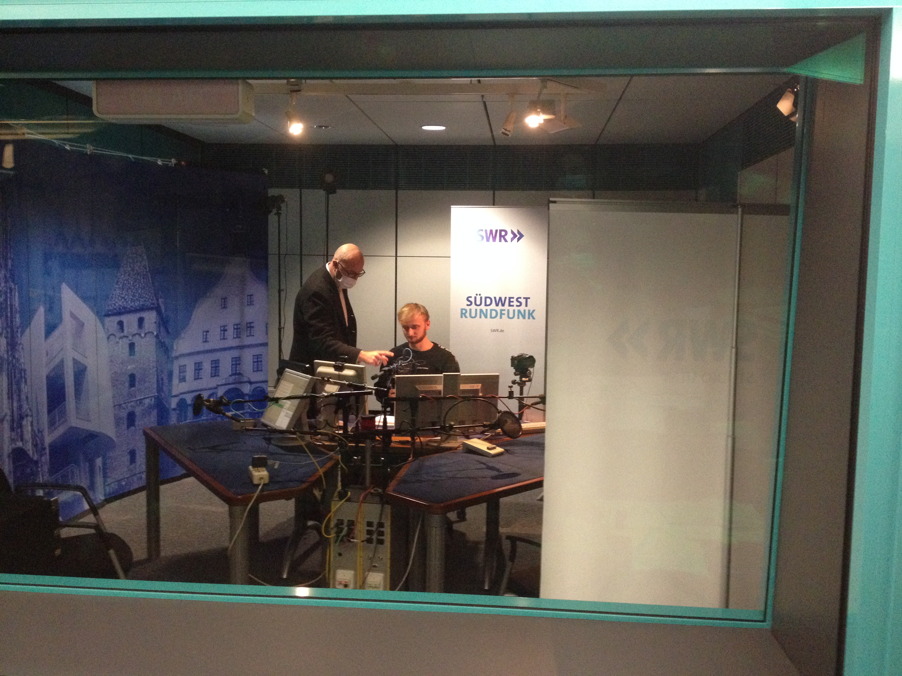
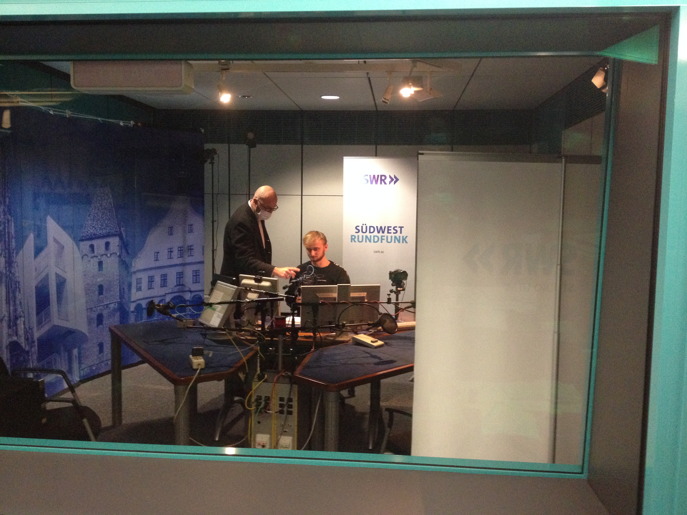

Meine Projekte
Seit ich 2018 angefangen habe Parkour&Freerunning zu trainieren, habe ich angefangen dabei Videos aufzunehmen und zu schneiden. Dadurch habe ich mich immer mehr in's Editing hineingewagt und meine Videos auf Youtube veröffentlicht.
Hier ein paar weitere Videos:


Parkour&Freerunning
Parkour ist die Kunst, sich spielerisch mit natürlichen Bewegungen geistig und körperlich fit zu halten und dabei die Umgebung kreativ zu nutzen.
 

Hier nehmen wir gerade unsere Beiträge für den vhs-Kurs auf. Das ganze hat sehr viel Spaß gemacht und wir haben dabei eine Menge von Frank Wiesner lernen können:D